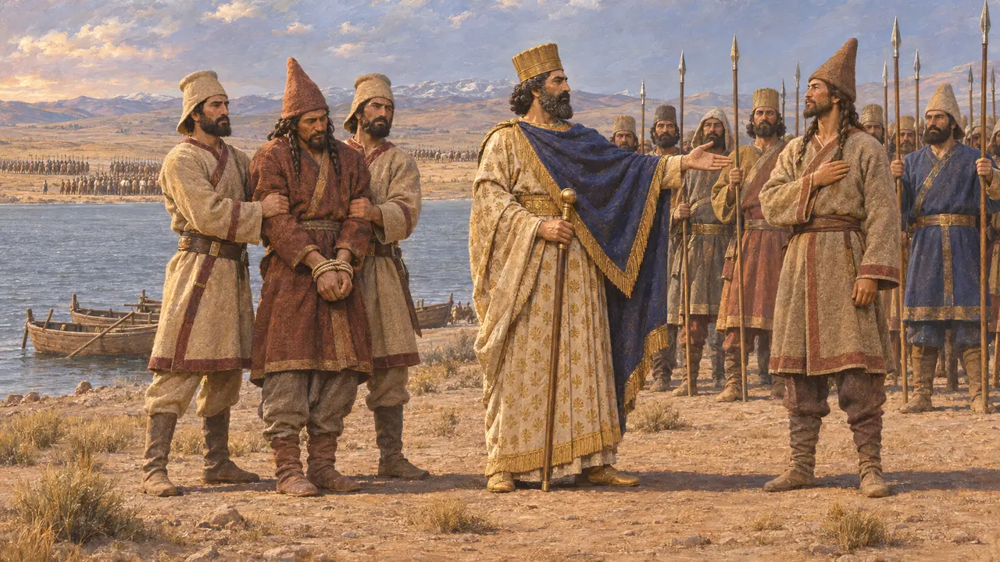
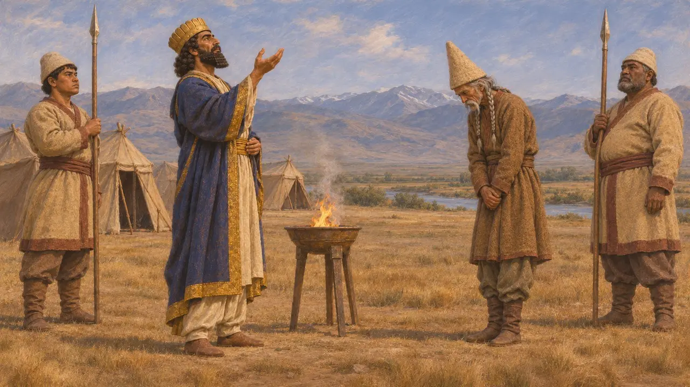
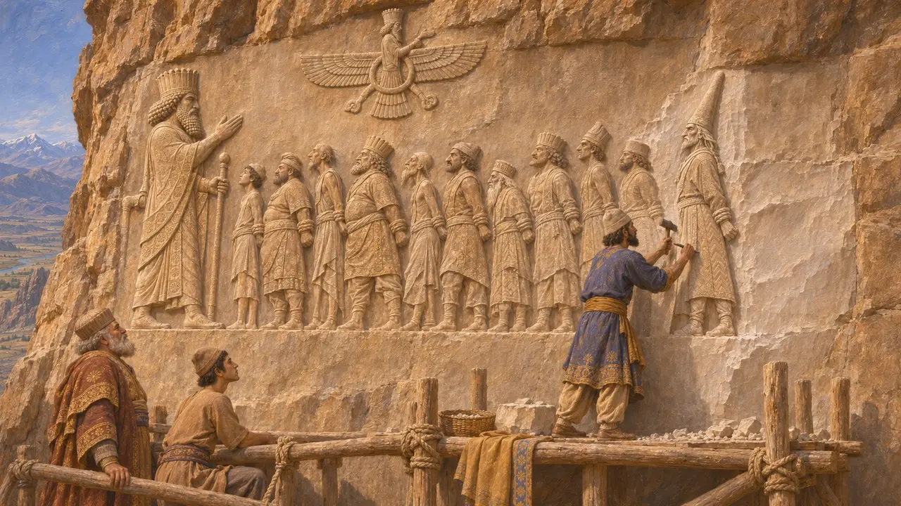
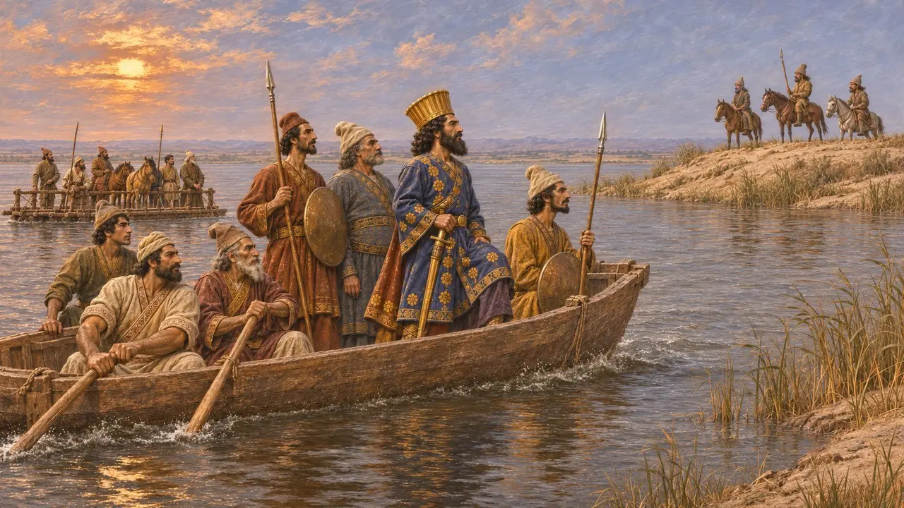
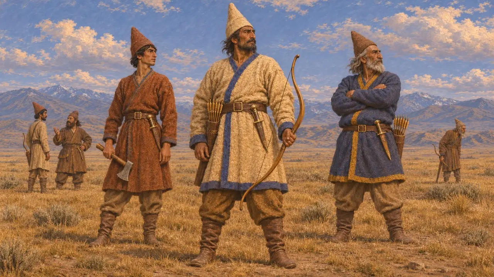

Enciclopedia › Battaglie ed eventi

La campagna di Dario contro Skunkha
La guerra di Dario contro i Saka dai cappelli a punta dell'Asia centrale, circa 519 a.C.
Nel gioco: Livello 5: La Carta
Intorno al 519 a.C. Dario guidò un esercito contro i Saka dal cappello a punta, attraversò un mare o una grande distesa d'acqua per raggiungerli e fece prigioniero il loro capo Skunkha. La campagna è nota quasi soltanto dalla quinta colonna dell'iscrizione di Behistun, dove Skunkha fu scolpito come ultimo prigioniero della fila davanti al Re. Essa portò la potenza di Dario sulla frontiera della steppa dove, secondo Erodoto, era morto Ciro.
Nel gioco: Il gioco mostra Dario che si mette in marcia, attraversa le acque e cattura Skunkha, come racconta Behistun. La data, circa il 519-518 a.C., concorda con il terzo anno di regno di Dario; l'iscrizione stessa non indica alcun giorno o mese preciso per la campagna.

Che cosa dice l'iscrizione di Behistun
Nelle fontiLa quinta colonna dell'iscrizione di Behistun fu scolpita solo in antico persiano e aggiunta dopo il testo principale. Essa raggruppa la campagna con le imprese del secondo e del terzo anno di Dario. Dario marciò con un esercito contro i Saka dal berretto a punta, raggiunse il mare, lo attraversò con il suo esercito e li sconfisse. Il loro capo Skunkha fu catturato e condotto davanti a lui, e Dario pose un altro uomo come capo al suo posto.
DB §71, §74

Un motivo religioso addotto
Nelle fontiLa stessa colonna definisce infedeli questi Saka e dice che non adoravano Ahuramazda, mentre Dario sì. Per il favore del dio, dunque, egli li trattò come volle. Il testo si chiude con un insegnamento: chi adora Ahuramazda sarà benedetto in vita e dopo la morte. La campagna fu così presentata come un segno del sostegno divino, al pari delle precedenti vittorie sui ribelli del 522-521 a.C.
DB §75-76

Skunkha aggiunto al rilievo
Nelle fontiUna figura di Skunkha, con un alto berretto a punta, fu scolpita all'estremità della fila di re ribelli legati davanti a Dario sulla parete rocciosa. Per fargli spazio fu distrutta parte della prima versione elamita del testo, che fu poi scolpita di nuovo lì vicino. L'aggiunta posteriore mostra che il monumento fu aggiornato nel corso del regno, anziché completato in un'unica campagna di lavori.
R. Schmitt, The Bisitun Inscriptions of Darius the Great: Old Persian Text, 1991

Quale acqua, e quali Saka
ContesoLa parola in antico persiano per l'acqua che Dario attraversò, draya, di norma significa mare, benché alcuni vi leggano un grande fiume, e il testo non nomina alcun luogo. La maggior parte degli storici colloca i Saka dal berretto a punta a est del Caspio, in Asia centrale. Pensano al Caspio stesso, al mare d'Aral o a un grande fiume come l'Oxus o il Giaxarte. Anche l'anno è dibattuto; i più si fermano al 519 a.C. circa, il terzo anno di regno di Dario.
P. Briant, From Cyrus to Alexander, 2002

I Saka dal berretto a punta negli scritti greci
Racconto anticoErodoto non menziona questa campagna; la sua guerra scitica di Dario è la successiva traversata dell'Istro in Europa. Descrive i Saka dell'esercito di Serse con alti berretti rigidi a punta, archi, pugnali e asce, e li chiama Sciti Amirgi. Gli elenchi persiani, tuttavia, tengono distinti i Saka amirgi (haumavarga) dai Saka dai berretti a punta. Elenchi reali come DNa nominano i Saka dai berretti a punta fra i popoli sudditi del Re.
Herodotus 7.64
Fonti
- DB §71-76
- R. Schmitt, The Bisitun Inscriptions of Darius the Great: Old Persian Text, 1991
- P. Briant, From Cyrus to Alexander, 2002
- A. Kuhrt, The Persian Empire: A Corpus of Sources from the Achaemenid Period, 2007
- Herodotus 7.64